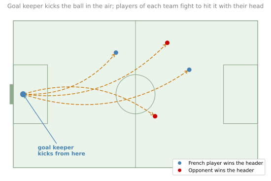
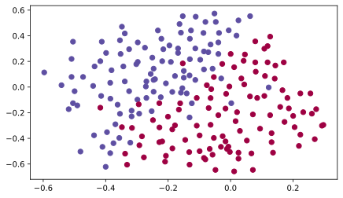
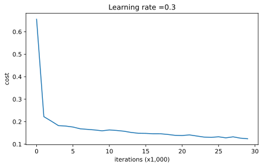
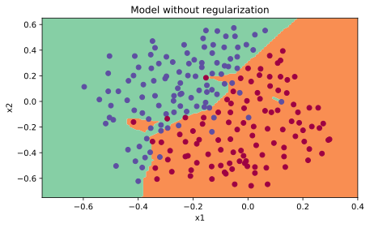
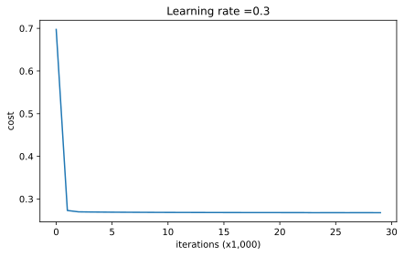
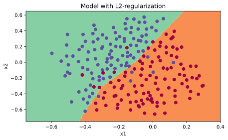
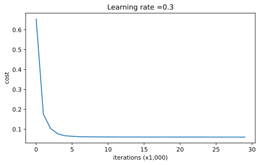
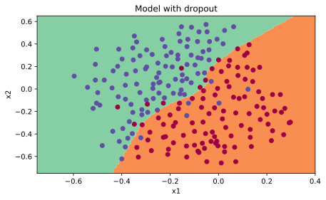

%config InlineBackend.figure_formats = ['svg']
import numpy as np
import matplotlib.pyplot as plt
import scipy.io
plt.rcParams['figure.figsize'] = (7.0, 4.0) # default size of plotsLab: Regularization
deep-learning
lab
regularization
dropout
Implement L2 regularization and inverted dropout by hand, then compare a baseline, an L2 model, and a dropout model on a 2D football dataset.
ImportantThree changes from the original notebook
This page runs on NumPy 2.4.4, Matplotlib 3.x and Python 3.13. Three things changed (updated 2026-08-31).
- Some NumPy and Matplotlib calls were migrated to their current spellings.
- Two figure captions were corrected. They named backward-propagation exercises while the figures are cost-versus-iteration training curves.
- A documented output shape was corrected from
(1,1)to(1, number of examples)in the dropout forward pass.
The dataset, the L2 and dropout implementations, keep_prob = 0.86, lambda = 0.7 and every printed result are the assignment’s own. The seed inside forward_propagation_with_dropout is kept exactly as the assignment has it, with its consequences explained where that function is defined.
This lab is the second programming assignment of the course, and it puts the regularization page into practice. Deep learning models have so much flexibility and capacity that overfitting can be a serious problem if the training dataset is not big enough. The model does well on the training set, but the learned network does not generalize to new examples it has never seen. You will implement L2 regularization and dropout by hand, plug each into the same 3-layer network, and watch the decision boundary change.
Packages and Helpers
Besides NumPy and matplotlib, this lab uses SciPy to read the dataset, which ships as a MATLAB .mat file.
The course provides a helper file, reg_utils.py, with the pieces that are not the point of this lab, including the parameter initialization (the \(1/\sqrt{n^{[l-1]}}\) scaling from the previous course), the plain forward and backward propagation, the unregularized cost, prediction, and plotting. They are reproduced in the collapsed callout below with the same two compatibility fixes as in the Initialization lab (dtype=int instead of the removed np.int, and .ravel() on scatter colors). The dataset loader reads the .mat file from this site’s media folder, data.mat.
NoteHelper Functions from reg_utils.py
def sigmoid(x):
"""Compute the sigmoid of x."""
s = 1 / (1 + np.exp(-x))
return s
def relu(x):
"""Compute the relu of x."""
s = np.maximum(0, x)
return s
def initialize_parameters(layer_dims):
"""Random initialization scaled by 1/sqrt(previous layer size)."""
np.random.seed(3)
parameters = {}
L = len(layer_dims) # number of layers in the network
for l in range(1, L):
parameters['W' + str(l)] = np.random.randn(layer_dims[l], layer_dims[l - 1]) / np.sqrt(layer_dims[l - 1])
parameters['b' + str(l)] = np.zeros((layer_dims[l], 1))
return parameters
def forward_propagation(X, parameters):
"""LINEAR -> RELU -> LINEAR -> RELU -> LINEAR -> SIGMOID."""
W1 = parameters["W1"]
b1 = parameters["b1"]
W2 = parameters["W2"]
b2 = parameters["b2"]
W3 = parameters["W3"]
b3 = parameters["b3"]
Z1 = np.dot(W1, X) + b1
A1 = relu(Z1)
Z2 = np.dot(W2, A1) + b2
A2 = relu(Z2)
Z3 = np.dot(W3, A2) + b3
A3 = sigmoid(Z3)
cache = (Z1, A1, W1, b1, Z2, A2, W2, b2, Z3, A3, W3, b3)
return A3, cache
def backward_propagation(X, Y, cache):
"""Backward propagation for the 3-layer network, no regularization."""
m = X.shape[1]
(Z1, A1, W1, b1, Z2, A2, W2, b2, Z3, A3, W3, b3) = cache
dZ3 = A3 - Y
dW3 = 1. / m * np.dot(dZ3, A2.T)
db3 = 1. / m * np.sum(dZ3, axis=1, keepdims=True)
dA2 = np.dot(W3.T, dZ3)
dZ2 = np.multiply(dA2, np.int64(A2 > 0))
dW2 = 1. / m * np.dot(dZ2, A1.T)
db2 = 1. / m * np.sum(dZ2, axis=1, keepdims=True)
dA1 = np.dot(W2.T, dZ2)
dZ1 = np.multiply(dA1, np.int64(A1 > 0))
dW1 = 1. / m * np.dot(dZ1, X.T)
db1 = 1. / m * np.sum(dZ1, axis=1, keepdims=True)
gradients = {"dZ3": dZ3, "dW3": dW3, "db3": db3,
"dA2": dA2, "dZ2": dZ2, "dW2": dW2, "db2": db2,
"dA1": dA1, "dZ1": dZ1, "dW1": dW1, "db1": db1}
return gradients
def update_parameters(parameters, grads, learning_rate):
"""Update parameters using gradient descent."""
n = len(parameters) // 2 # number of layers in the neural network
for k in range(n):
parameters["W" + str(k + 1)] = parameters["W" + str(k + 1)] - learning_rate * grads["dW" + str(k + 1)]
parameters["b" + str(k + 1)] = parameters["b" + str(k + 1)] - learning_rate * grads["db" + str(k + 1)]
return parameters
def predict(X, y, parameters):
"""Predict 0/1 labels and print the accuracy."""
m = X.shape[1]
p = np.zeros((1, m), dtype=int)
a3, caches = forward_propagation(X, parameters)
for i in range(0, a3.shape[1]):
if a3[0, i] > 0.5:
p[0, i] = 1
else:
p[0, i] = 0
print("Accuracy: " + str(np.mean((p[0, :] == y[0, :]))))
return p
def compute_cost(a3, Y):
"""Cross-entropy cost averaged over the training set."""
m = Y.shape[1]
logprobs = np.multiply(-np.log(a3), Y) + np.multiply(-np.log(1 - a3), 1 - Y)
cost = 1. / m * np.nansum(logprobs)
return cost
def predict_dec(parameters, X):
"""Predictions used for plotting the decision boundary."""
a3, cache = forward_propagation(X, parameters)
predictions = (a3 > 0.5)
return predictions
def plot_decision_boundary(model, X, y):
x_min, x_max = X[0, :].min() - 1, X[0, :].max() + 1
y_min, y_max = X[1, :].min() - 1, X[1, :].max() + 1
h = 0.01
xx, yy = np.meshgrid(np.arange(x_min, x_max, h), np.arange(y_min, y_max, h))
Z = model(np.c_[xx.ravel(), yy.ravel()])
Z = Z.reshape(xx.shape)
plt.contourf(xx, yy, Z, cmap=plt.cm.Spectral)
plt.ylabel('x2')
plt.xlabel('x1')
plt.scatter(X[0, :], X[1, :], c=y.ravel(), cmap=plt.cm.Spectral)
plt.show()
def load_2D_dataset():
data = scipy.io.loadmat('../../../media/deep-learning/regularization/data.mat')
train_X = data['X'].T
train_Y = data['y'].T
test_X = data['Xval'].T
test_Y = data['yval'].T
plt.scatter(train_X[0, :], train_X[1, :], c=train_Y.ravel(), s=40, cmap=plt.cm.Spectral)
return train_X, train_Y, test_X, test_YThe exercise test cases from testCases.py are in this second callout. Each one builds small seeded inputs so the printed outputs of your functions can be compared against the course’s expected values.
NoteTest Cases from testCases.py
def compute_cost_with_regularization_test_case():
np.random.seed(1)
Y_assess = np.array([[1, 1, 0, 1, 0]])
W1 = np.random.randn(2, 3)
b1 = np.random.randn(2, 1)
W2 = np.random.randn(3, 2)
b2 = np.random.randn(3, 1)
W3 = np.random.randn(1, 3)
b3 = np.random.randn(1, 1)
parameters = {"W1": W1, "b1": b1, "W2": W2, "b2": b2, "W3": W3, "b3": b3}
a3 = np.array([[0.40682402, 0.01629284, 0.16722898, 0.10118111, 0.40682402]])
return a3, Y_assess, parameters
def backward_propagation_with_regularization_test_case():
np.random.seed(1)
X_assess = np.random.randn(3, 5)
Y_assess = np.array([[1, 1, 0, 1, 0]])
cache = (np.array([[-1.52855314, 3.32524635, 2.13994541, 2.60700654, -0.75942115],
[-1.98043538, 4.1600994 , 0.79051021, 1.46493512, -0.45506242]]),
np.array([[ 0. , 3.32524635, 2.13994541, 2.60700654, 0. ],
[ 0. , 4.1600994 , 0.79051021, 1.46493512, 0. ]]),
np.array([[-1.09989127, -0.17242821, -0.87785842],
[ 0.04221375, 0.58281521, -1.10061918]]),
np.array([[ 1.14472371],
[ 0.90159072]]),
np.array([[ 0.53035547, 5.94892323, 2.31780174, 3.16005701, 0.53035547],
[-0.69166075, -3.47645987, -2.25194702, -2.65416996, -0.69166075],
[-0.39675353, -4.62285846, -2.61101729, -3.22874921, -0.39675353]]),
np.array([[ 0.53035547, 5.94892323, 2.31780174, 3.16005701, 0.53035547],
[ 0. , 0. , 0. , 0. , 0. ],
[ 0. , 0. , 0. , 0. , 0. ]]),
np.array([[ 0.50249434, 0.90085595],
[-0.68372786, -0.12289023],
[-0.93576943, -0.26788808]]),
np.array([[ 0.53035547],
[-0.69166075],
[-0.39675353]]),
np.array([[-0.3771104 , -4.10060224, -1.60539468, -2.18416951, -0.3771104 ]]),
np.array([[ 0.40682402, 0.01629284, 0.16722898, 0.10118111, 0.40682402]]),
np.array([[-0.6871727 , -0.84520564, -0.67124613]]),
np.array([[-0.0126646]]))
return X_assess, Y_assess, cache
def forward_propagation_with_dropout_test_case():
np.random.seed(1)
X_assess = np.random.randn(3, 5)
W1 = np.random.randn(2, 3)
b1 = np.random.randn(2, 1)
W2 = np.random.randn(3, 2)
b2 = np.random.randn(3, 1)
W3 = np.random.randn(1, 3)
b3 = np.random.randn(1, 1)
parameters = {"W1": W1, "b1": b1, "W2": W2, "b2": b2, "W3": W3, "b3": b3}
return X_assess, parameters
def backward_propagation_with_dropout_test_case():
np.random.seed(1)
X_assess = np.random.randn(3, 5)
Y_assess = np.array([[1, 1, 0, 1, 0]])
cache = (np.array([[-1.52855314, 3.32524635, 2.13994541, 2.60700654, -0.75942115],
[-1.98043538, 4.1600994 , 0.79051021, 1.46493512, -0.45506242]]),
np.array([[ True, False, True, True, True],
[ True, True, True, True, False]]),
np.array([[ 0. , 0. , 4.27989081, 5.21401307, 0. ],
[ 0. , 8.32019881, 1.58102041, 2.92987024, 0. ]]),
np.array([[-1.09989127, -0.17242821, -0.87785842],
[ 0.04221375, 0.58281521, -1.10061918]]),
np.array([[ 1.14472371],
[ 0.90159072]]),
np.array([[ 0.53035547, 8.02565606, 4.10524802, 5.78975856, 0.53035547],
[-0.69166075, -1.71413186, -3.81223329, -4.61667916, -0.69166075],
[-0.39675353, -2.62563561, -4.82528105, -6.0607449 , -0.39675353]]),
np.array([[ True, False, True, False, True],
[False, True, False, True, True],
[False, False, True, False, False]]),
np.array([[ 1.06071093, 0. , 8.21049603, 0. , 1.06071093],
[ 0. , 0. , 0. , 0. , 0. ],
[ 0. , 0. , 0. , 0. , 0. ]]),
np.array([[ 0.50249434, 0.90085595],
[-0.68372786, -0.12289023],
[-0.93576943, -0.26788808]]),
np.array([[ 0.53035547],
[-0.69166075],
[-0.39675353]]),
np.array([[-0.7415562 , -0.0126646 , -5.65469333, -0.0126646 , -0.7415562 ]]),
np.array([[ 0.32266394, 0.49683389, 0.00348883, 0.49683389, 0.32266394]]),
np.array([[-0.6871727 , -0.84520564, -0.67124613]]),
np.array([[-0.0126646]]))
return X_assess, Y_assess, cacheProblem Statement
You have just been hired as an AI expert by the French Football Corporation. They would like you to recommend positions where France’s goal keeper should kick the ball so that the French team’s players can then hit it with their head.

The corporation gives you a 2D dataset from France’s past 10 games. Each dot marks a position on the field where a player hit the ball with their head after the French goal keeper shot it from the left side. A blue dot means a French player managed to hit the ball there, and a red dot means a player of the other team got to it first. Your goal is to use a deep learning model to find the positions on the field where the goal keeper should kick the ball.
Loading the Dataset
NoteLab Files Download
Everything this lab needs, ready to download.
- data.mat (6 KB), the dataset, with a training split (
X,y, 211 positions) and a test split (Xval,yval, 200 positions) - reg_utils.py (7 KB), the helper functions
- testCases.py (4 KB), the seeded exercise test cases
To run the lab outside this page, put data.mat in a datasets/ folder next to the two .py files, matching the course layout that load_2D_dataset() expects. The hosted .py files already include the small compatibility fixes for current NumPy and matplotlib versions.
train_X, train_Y, test_X, test_Y = load_2D_dataset()
The dataset is a little noisy, but a diagonal line separating the upper left half (blue) from the lower right half (red) looks like it would work well. You will first try a non-regularized model, then regularize it, and decide which model to recommend to the French Football Corporation.
Non-Regularized Model
The 3-layer network below is already implemented, with layer sizes \([2, 20, 3, 1]\). It can be used in three modes.
- Plain mode is the default, with no regularization.
- Regularization mode is enabled by setting the
lambdinput to a non-zero value. (The variable is spelledlambdinstead oflambdabecauselambdais a reserved keyword in Python, as noted on the regularization page.) - Dropout mode is enabled by setting
keep_probto a value less than one.
You will first try the model without any regularization, then implement compute_cost_with_regularization() and backward_propagation_with_regularization() for L2, and forward_propagation_with_dropout() and backward_propagation_with_dropout() for dropout. In each part the same model() runs with the correct inputs so that it calls the functions you implemented. This assignment explores one technique at a time, so the model never uses L2 and dropout together.
def model(X, Y, learning_rate=0.3, num_iterations=30000, print_cost=True, lambd=0, keep_prob=1):
"""
Implements a three-layer neural network: LINEAR->RELU->LINEAR->RELU->LINEAR->SIGMOID.
Arguments:
X -- input data, of shape (input size, number of examples)
Y -- true "label" vector (1 for blue dot / 0 for red dot), of shape (output size, number of examples)
learning_rate -- learning rate of the optimization
num_iterations -- number of iterations of the optimization loop
print_cost -- If True, print the cost every 10000 iterations
lambd -- regularization hyperparameter, scalar
keep_prob -- probability of keeping a neuron active during drop-out, scalar
Returns:
parameters -- parameters learned by the model. They can then be used to predict.
"""
grads = {}
costs = [] # to keep track of the cost
m = X.shape[1] # number of examples
layers_dims = [X.shape[0], 20, 3, 1]
# Initialize parameters dictionary.
parameters = initialize_parameters(layers_dims)
# Loop (gradient descent)
for i in range(0, num_iterations):
# Forward propagation: LINEAR -> RELU -> LINEAR -> RELU -> LINEAR -> SIGMOID.
if keep_prob == 1:
a3, cache = forward_propagation(X, parameters)
elif keep_prob < 1:
a3, cache = forward_propagation_with_dropout(X, parameters, keep_prob)
# Cost function
if lambd == 0:
cost = compute_cost(a3, Y)
else:
cost = compute_cost_with_regularization(a3, Y, parameters, lambd)
# Backward propagation.
assert (lambd == 0 or keep_prob == 1) # it is possible to use both L2 regularization and dropout,
# but this assignment will only explore one at a time
if lambd == 0 and keep_prob == 1:
grads = backward_propagation(X, Y, cache)
elif lambd != 0:
grads = backward_propagation_with_regularization(X, Y, cache, lambd)
elif keep_prob < 1:
grads = backward_propagation_with_dropout(X, Y, cache, keep_prob)
# Update parameters.
parameters = update_parameters(parameters, grads, learning_rate)
# Print the loss every 10000 iterations
if print_cost and i % 10000 == 0:
print("Cost after iteration {}: {}".format(i, cost))
if print_cost and i % 1000 == 0:
costs.append(cost)
# plot the cost
plt.plot(costs)
plt.ylabel('cost')
plt.xlabel('iterations (x1,000)')
plt.title("Learning rate =" + str(learning_rate))
plt.show()
return parametersTrain the model without any regularization and observe the accuracy on the train and test sets.
parameters = model(train_X, train_Y)
print("On the training set:")
predictions_train = predict(train_X, train_Y, parameters)
print("On the test set:")
predictions_test = predict(test_X, test_Y, parameters)Cost after iteration 0: 0.6557412523481002
Cost after iteration 10000: 0.16329987525724213
Cost after iteration 20000: 0.1385164242326162
On the training set:
Accuracy: 0.9478672985781991
On the test set:
Accuracy: 0.915The train accuracy is 94.8% while the test accuracy is 91.5%. This is the baseline model, and the rest of the lab observes the impact of regularization on it. Plot its decision boundary.
plt.title("Model without regularization")
axes = plt.gca()
axes.set_xlim([-0.75, 0.40])
axes.set_ylim([-0.75, 0.65])
plot_decision_boundary(lambda x: predict_dec(parameters, x.T), train_X, train_Y)
The non-regularized model is obviously overfitting the training set. It is fitting the noisy points! Now look at two techniques to reduce overfitting.
L2 Regularization
The standard way to avoid overfitting is L2 regularization, which modifies the cost function from
\[ J = -\frac{1}{m} \sum_{i=1}^{m} \left( y^{(i)} \log\left(a^{[L](i)}\right) + (1 - y^{(i)}) \log\left(1 - a^{[L](i)}\right) \right) \]
to
\[ J_{\text{regularized}} = \underbrace{-\frac{1}{m} \sum_{i=1}^{m} \left( y^{(i)} \log\left(a^{[L](i)}\right) + (1 - y^{(i)}) \log\left(1 - a^{[L](i)}\right) \right)}_{\text{cross-entropy cost}} + \underbrace{\frac{1}{m} \frac{\lambda}{2} \sum_l \sum_k \sum_j W_{k,j}^{[l]\,2}}_{\text{L2 regularization cost}} \]
exactly the Frobenius norm penalty from the regularization page.
Exercise 1, compute_cost_with_regularization
Compute the regularized cost. For each weight matrix, \(\sum_k \sum_j W_{k,j}^{[l]\,2}\) is np.sum(np.square(Wl)). Do this for \(W^{[1]}\), \(W^{[2]}\), and \(W^{[3]}\), sum the three terms, and multiply by \(\frac{1}{m} \frac{\lambda}{2}\).
def compute_cost_with_regularization(A3, Y, parameters, lambd):
"""
Implement the cost function with L2 regularization.
Arguments:
A3 -- post-activation, output of forward propagation, of shape (output size, number of examples)
Y -- "true" labels vector, of shape (output size, number of examples)
parameters -- python dictionary containing parameters of the model
lambd -- regularization hyperparameter, scalar
Returns:
cost -- value of the regularized loss function
"""
m = Y.shape[1]
W1 = parameters["W1"]
W2 = parameters["W2"]
W3 = parameters["W3"]
cross_entropy_cost = compute_cost(A3, Y) # This gives you the cross-entropy part of the cost
L2_regularization_cost = (1. / m) * (lambd / 2) * (
np.sum(np.square(W1)) + np.sum(np.square(W2)) + np.sum(np.square(W3)))
cost = cross_entropy_cost + L2_regularization_cost
return cost
A3, t_Y, parameters = compute_cost_with_regularization_test_case()
cost = compute_cost_with_regularization(A3, t_Y, parameters, lambd=0.1)
print("cost = " + str(cost))cost = 1.7864859451590758Exercise 2, backward_propagation_with_regularization
Because the cost changed, backward propagation has to change as well; all gradients are computed with respect to the new cost. The changes only concern dW1, dW2, and dW3. For each, add the gradient of the regularization term,
\[ \frac{d}{dW} \left( \frac{1}{2} \frac{\lambda}{m} W^2 \right) = \frac{\lambda}{m} W \]
def backward_propagation_with_regularization(X, Y, cache, lambd):
"""
Implements the backward propagation of our baseline model to which we added an L2 regularization.
Arguments:
X -- input dataset, of shape (input size, number of examples)
Y -- "true" labels vector, of shape (output size, number of examples)
cache -- cache output from forward_propagation()
lambd -- regularization hyperparameter, scalar
Returns:
gradients -- A dictionary with the gradients with respect to each parameter, activation and pre-activation variables
"""
m = X.shape[1]
(Z1, A1, W1, b1, Z2, A2, W2, b2, Z3, A3, W3, b3) = cache
dZ3 = A3 - Y
dW3 = 1. / m * np.dot(dZ3, A2.T) + (lambd / m) * W3
db3 = 1. / m * np.sum(dZ3, axis=1, keepdims=True)
dA2 = np.dot(W3.T, dZ3)
dZ2 = np.multiply(dA2, np.int64(A2 > 0))
dW2 = 1. / m * np.dot(dZ2, A1.T) + (lambd / m) * W2
db2 = 1. / m * np.sum(dZ2, axis=1, keepdims=True)
dA1 = np.dot(W2.T, dZ2)
dZ1 = np.multiply(dA1, np.int64(A1 > 0))
dW1 = 1. / m * np.dot(dZ1, X.T) + (lambd / m) * W1
db1 = 1. / m * np.sum(dZ1, axis=1, keepdims=True)
gradients = {"dZ3": dZ3, "dW3": dW3, "db3": db3, "dA2": dA2,
"dZ2": dZ2, "dW2": dW2, "db2": db2, "dA1": dA1,
"dZ1": dZ1, "dW1": dW1, "db1": db1}
return gradients
t_X, t_Y, cache = backward_propagation_with_regularization_test_case()
grads = backward_propagation_with_regularization(t_X, t_Y, cache, lambd=0.7)
print("dW1 = \n" + str(grads["dW1"]))
print("dW2 = \n" + str(grads["dW2"]))
print("dW3 = \n" + str(grads["dW3"]))dW1 =
[[-0.25604646 0.12298827 -0.28297129]
[-0.17706303 0.34536094 -0.4410571 ]]
dW2 =
[[ 0.79276486 0.85133918]
[-0.0957219 -0.01720463]
[-0.13100772 -0.03750433]]
dW3 =
[[-1.77691347 -0.11832879 -0.09397446]]Now run the model with L2 regularization (\(\lambda = 0.7\)). The model() function calls compute_cost_with_regularization instead of compute_cost, and backward_propagation_with_regularization instead of backward_propagation.
parameters = model(train_X, train_Y, lambd=0.7)
print("On the train set:")
predictions_train = predict(train_X, train_Y, parameters)
print("On the test set:")
predictions_test = predict(test_X, test_Y, parameters)Cost after iteration 0: 0.6974484493131264
Cost after iteration 10000: 0.2684918873282239
Cost after iteration 20000: 0.2680916337127301
On the train set:
Accuracy: 0.9383886255924171
On the test set:
Accuracy: 0.93The test set accuracy increased to 93%. You have saved the French football team! The model is no longer overfitting the training data. Plot the decision boundary.
plt.title("Model with L2-regularization")
axes = plt.gca()
axes.set_xlim([-0.75, 0.40])
axes.set_ylim([-0.75, 0.65])
plot_decision_boundary(lambda x: predict_dec(parameters, x.T), train_X, train_Y)
Observations from this experiment.
- The value of \(\lambda\) is a hyperparameter that you can tune using a dev set.
- L2 regularization makes the decision boundary smoother. If \(\lambda\) is too large, it is also possible to “oversmooth”, resulting in a model with high bias.
What is L2 regularization actually doing? It relies on the assumption that a model with small weights is simpler than a model with large weights. By penalizing the square values of the weights in the cost function, you drive all the weights to smaller values. It becomes too costly for the cost to have large weights! This leads to a smoother model in which the output changes more slowly as the input changes.
ImportantWhat You Should Remember About L2 Regularization
- The cost computation gains a regularization term.
- The backpropagation function gains extra terms in the gradients with respect to the weight matrices.
- Weights end up smaller (weight decay); they are pushed to smaller values.
Dropout
Finally, dropout is a widely used regularization technique that is specific to deep learning. It randomly shuts down some neurons in each iteration. Watch these two animations to see what this means.
Dropout on the second hidden layer. At each iteration, you shut down (set to zero) each neuron of a layer with probability \(1 - keep\_prob\) or keep it with probability \(keep\_prob\) (50% here). The dropped neurons contribute to neither the forward nor the backward propagation of that iteration.
Dropout on the first and third hidden layers. The first layer shuts down on average 40% of its neurons, the third layer on average 20%.
When you shut some neurons down, you actually modify your model. The idea behind dropout is that at each iteration you train a different model that uses only a subset of your neurons.
One caveat about the implementation below, carried over from the original assignment. It calls np.random.seed(1) inside forward_propagation_with_dropout, which the assignment does so its graded check is reproducible. Because the seed resets on every call, and the shapes and keep_prob never change, the same masks \(D^{[1]}\) and \(D^{[2]}\) come back on every training iteration. So this particular run does not actually vary the thinned network from step to step. The averaging effect described above is what dropout does in practice; to see it here you would lift the seed out of the function and set it once before training. With dropout, neurons become less sensitive to the activation of one other specific neuron, because that other neuron might be shut down at any time. This is the same inverted dropout technique from the notes, now implemented for real.
Exercise 3, forward_propagation_with_dropout
Implement forward propagation with dropout for the 3-layer network, adding dropout to the first and second hidden layers. Dropout is applied to neither the input layer nor the output layer. Four steps per layer:
- Create a random matrix \(D^{[1]}\) of the same dimension as \(A^{[1]}\) using
np.random.rand(), which draws numbers uniformly between 0 and 1. This is the vectorized version of the per-unit coin toss, \(D^{[1]} = [d^{[1](1)} \, d^{[1](2)} \cdots d^{[1](m)}]\). - Convert each entry of \(D^{[1]}\) to 1 with probability
keep_proband 0 otherwise, with the comparison(D1 < keep_prob). Adding.astype(int)turns the boolean array into explicit ones and zeros. (Multiplying booleans with numbers works too, since Python convertsTrue/Falseto 1/0, but converting to the intended data type is better practice.) - Set \(A^{[1]}\) to \(A^{[1]} * D^{[1]}\), shutting down the masked neurons. Think of \(D^{[1]}\) as a mask that zeroes out some values when multiplied elementwise.
- Divide \(A^{[1]}\) by
keep_prob, which keeps the expected value of the activations the same as without dropout (inverted dropout).
def forward_propagation_with_dropout(X, parameters, keep_prob=0.5):
"""
Implements the forward propagation: LINEAR -> RELU + DROPOUT -> LINEAR -> RELU + DROPOUT -> LINEAR -> SIGMOID.
Arguments:
X -- input dataset, of shape (2, number of examples)
parameters -- python dictionary containing your parameters "W1", "b1", "W2", "b2", "W3", "b3"
keep_prob -- probability of keeping a neuron active during drop-out, scalar
Returns:
A3 -- last activation value, output of the forward propagation, of shape (1, number of examples)
cache -- tuple, information stored for computing the backward propagation
"""
np.random.seed(1)
# retrieve parameters
W1 = parameters["W1"]
b1 = parameters["b1"]
W2 = parameters["W2"]
b2 = parameters["b2"]
W3 = parameters["W3"]
b3 = parameters["b3"]
# LINEAR -> RELU -> LINEAR -> RELU -> LINEAR -> SIGMOID
Z1 = np.dot(W1, X) + b1
A1 = relu(Z1)
D1 = np.random.rand(A1.shape[0], A1.shape[1]) # Step 1: initialize matrix D1
D1 = (D1 < keep_prob).astype(int) # Step 2: convert entries of D1 to 0 or 1
A1 = A1 * D1 # Step 3: shut down some neurons of A1
A1 = A1 / keep_prob # Step 4: scale the value of neurons that have not been shut down
Z2 = np.dot(W2, A1) + b2
A2 = relu(Z2)
D2 = np.random.rand(A2.shape[0], A2.shape[1]) # Step 1: initialize matrix D2
D2 = (D2 < keep_prob).astype(int) # Step 2: convert entries of D2 to 0 or 1
A2 = A2 * D2 # Step 3: shut down some neurons of A2
A2 = A2 / keep_prob # Step 4: scale the value of neurons that have not been shut down
Z3 = np.dot(W3, A2) + b3
A3 = sigmoid(Z3)
cache = (Z1, D1, A1, W1, b1, Z2, D2, A2, W2, b2, Z3, A3, W3, b3)
return A3, cache
t_X, parameters = forward_propagation_with_dropout_test_case()
A3, cache = forward_propagation_with_dropout(t_X, parameters, keep_prob=0.7)
print("A3 = " + str(A3))A3 = [[0.36974721 0.00305176 0.04565099 0.49683389 0.36974721]]Exercise 4, backward_propagation_with_dropout
Backpropagation with dropout is actually quite easy, only two steps, using the masks \(D^{[1]}\) and \(D^{[2]}\) stored in the cache.
- During forward propagation you shut down some neurons by applying the mask \(D^{[1]}\) to
A1. In backpropagation, shut down the same neurons by reapplying the same mask \(D^{[1]}\) todA1. - During forward propagation you divided
A1bykeep_prob. In backpropagation, dividedA1bykeep_probagain. (The calculus interpretation is that if \(A^{[1]}\) is scaled bykeep_prob, then its derivative \(dA^{[1]}\) is scaled by the samekeep_prob.)
def backward_propagation_with_dropout(X, Y, cache, keep_prob):
"""
Implements the backward propagation of our baseline model to which we added dropout.
Arguments:
X -- input dataset, of shape (2, number of examples)
Y -- "true" labels vector, of shape (output size, number of examples)
cache -- cache output from forward_propagation_with_dropout()
keep_prob -- probability of keeping a neuron active during drop-out, scalar
Returns:
gradients -- A dictionary with the gradients with respect to each parameter, activation and pre-activation variables
"""
m = X.shape[1]
(Z1, D1, A1, W1, b1, Z2, D2, A2, W2, b2, Z3, A3, W3, b3) = cache
dZ3 = A3 - Y
dW3 = 1. / m * np.dot(dZ3, A2.T)
db3 = 1. / m * np.sum(dZ3, axis=1, keepdims=True)
dA2 = np.dot(W3.T, dZ3)
dA2 = dA2 * D2 # Step 1: Apply mask D2 to shut down the same neurons as during the forward propagation
dA2 = dA2 / keep_prob # Step 2: Scale the value of neurons that have not been shut down
dZ2 = np.multiply(dA2, np.int64(A2 > 0))
dW2 = 1. / m * np.dot(dZ2, A1.T)
db2 = 1. / m * np.sum(dZ2, axis=1, keepdims=True)
dA1 = np.dot(W2.T, dZ2)
dA1 = dA1 * D1 # Step 1: Apply mask D1 to shut down the same neurons as during the forward propagation
dA1 = dA1 / keep_prob # Step 2: Scale the value of neurons that have not been shut down
dZ1 = np.multiply(dA1, np.int64(A1 > 0))
dW1 = 1. / m * np.dot(dZ1, X.T)
db1 = 1. / m * np.sum(dZ1, axis=1, keepdims=True)
gradients = {"dZ3": dZ3, "dW3": dW3, "db3": db3, "dA2": dA2,
"dZ2": dZ2, "dW2": dW2, "db2": db2, "dA1": dA1,
"dZ1": dZ1, "dW1": dW1, "db1": db1}
return gradients
t_X, t_Y, cache = backward_propagation_with_dropout_test_case()
gradients = backward_propagation_with_dropout(t_X, t_Y, cache, keep_prob=0.8)
print("dA1 = \n" + str(gradients["dA1"]))
print("dA2 = \n" + str(gradients["dA2"]))dA1 =
[[ 0.36544439 0. -0.00188233 0. -0.17408748]
[ 0.65515713 0. -0.00337459 0. -0. ]]
dA2 =
[[ 0.58180856 0. -0.00299679 0. -0.27715731]
[ 0. 0.53159854 -0. 0.53159854 -0.34089673]
[ 0. 0. -0.00292733 0. -0. ]]Now run the model with dropout (keep_prob = 0.86), which means at every iteration each neuron of layers 1 and 2 is shut down with 14% probability. The model() function calls forward_propagation_with_dropout instead of forward_propagation, and backward_propagation_with_dropout instead of backward_propagation.
parameters = model(train_X, train_Y, keep_prob=0.86, learning_rate=0.3)
print("On the train set:")
predictions_train = predict(train_X, train_Y, parameters)
print("On the test set:")
predictions_test = predict(test_X, test_Y, parameters)Cost after iteration 0: 0.6543912405149825Cost after iteration 10000: 0.061016986574905584
Cost after iteration 20000: 0.060582435798513114
On the train set:
Accuracy: 0.9289099526066351
On the test set:
Accuracy: 0.95Dropout works great! The test accuracy has increased again, to 95%. The model is not overfitting the training set and does a great job on the test set. The French football team will be forever grateful to you! Plot the decision boundary.
plt.title("Model with dropout")
axes = plt.gca()
axes.set_xlim([-0.75, 0.40])
axes.set_ylim([-0.75, 0.65])
plot_decision_boundary(lambda x: predict_dec(parameters, x.T), train_X, train_Y)
Two notes before wrapping up.
- A common mistake when using dropout is to apply it both in training and testing. Use dropout (randomly eliminate nodes) only in training, exactly as the notes on test time explain.
- Deep learning frameworks like TensorFlow, PaddlePaddle, Keras, and Caffe come with a dropout layer implementation, so you will not always write it by hand. Some of these frameworks appear later in the specialization.
ImportantWhat You Should Remember About Dropout
- Dropout is a regularization technique.
- Only use dropout during training. Do not use dropout (randomly eliminate nodes) during test time.
- Apply dropout both during forward and backward propagation.
- During training, divide each dropout layer by
keep_probto keep the same expected value for the activations. For example, ifkeep_probis 0.5, then on average half the nodes are shut down, so the output would be scaled down by 0.5 since only the remaining half contribute. Dividing by 0.5 is equivalent to multiplying by 2, so the output keeps the same expected value. This works for any value ofkeep_prob, not just 0.5.
Conclusions
Here are the results of the three models.
| Model | Train accuracy | Test accuracy |
|---|---|---|
| 3-layer NN without regularization | 95% | 91.5% |
| 3-layer NN with L2 regularization | 94% | 93% |
| 3-layer NN with dropout | 93% | 95% |
Note that regularization hurts training set performance. This is because it limits the ability of the network to overfit the training set. But since it ultimately gives better test accuracy, it is helping the system. Congratulations for finishing this lab, and for revolutionizing French football.
ImportantWhat to Remember from This Lab
- Regularization helps reduce overfitting.
- Regularization drives the weights to lower values.
- L2 regularization and dropout are two very effective regularization techniques.